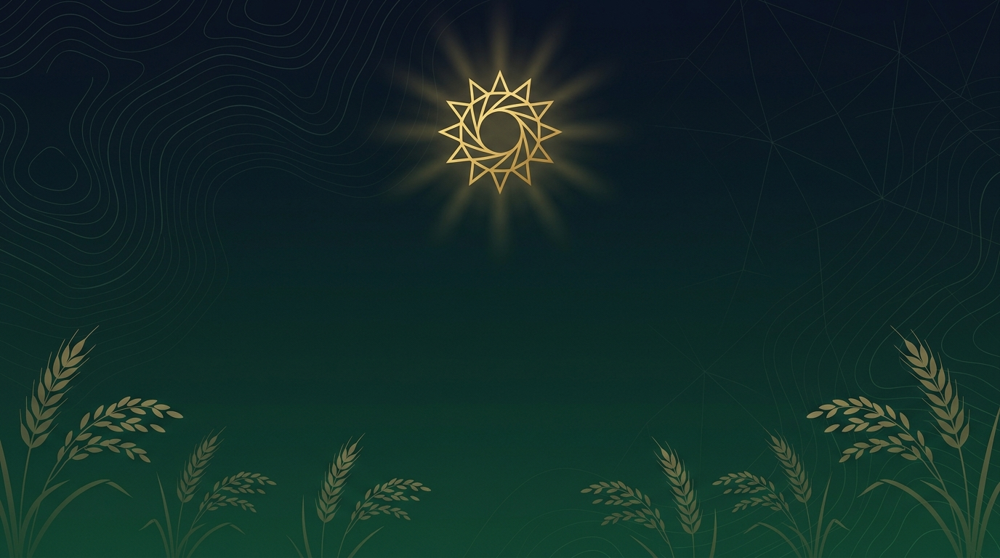
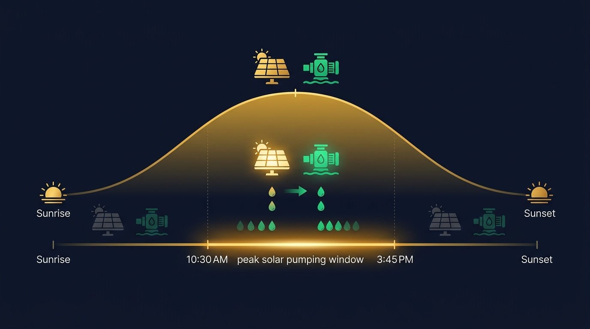
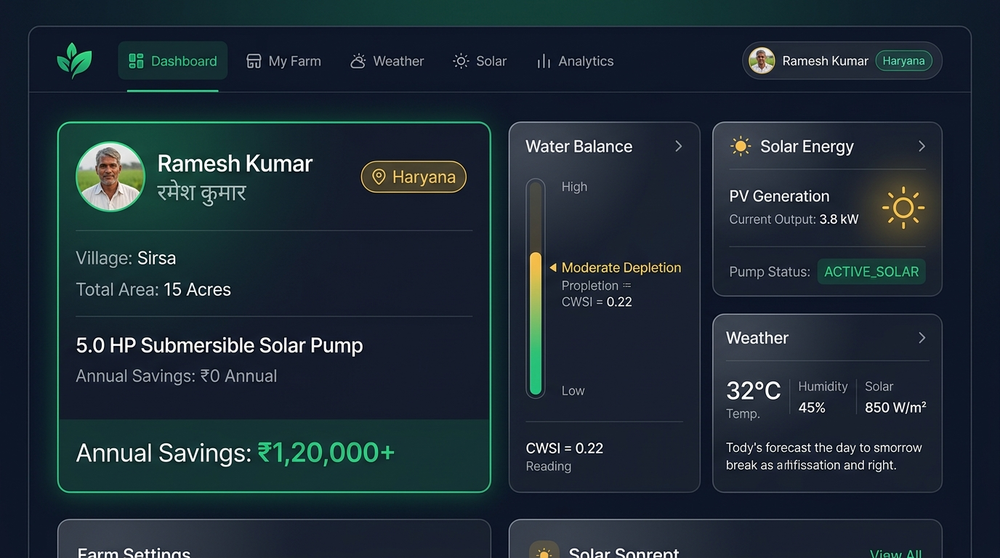

More informed irrigation decisions. Better visibility into root-zone depletion and crop water stress before irreversible damage.
Greater alignment between irrigation timing and solar availability. Designed to reduce reliance on expensive grid/diesel pumping periods.
Actionable, explainable recommendations in Hindi and English. Traceable decisions that build trust through transparency.